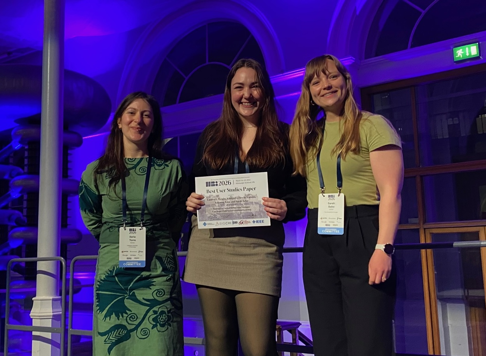

Recent News
We're excited to mark the start of our lab's summer research initiatives, which include the full-time involvement of 9 undergraduate summer interns! We're very excited to have this very talented group join our lab and work with us on HRI research this summer!
Our paper Fictional vs. Factual Robot Tutor Dialogue Can Shape Child Social-Emotional Learning, led by Ph.D. student Lauren Wright and conducted in collaboration with Kiljoong Kim of Chapin Hall, received the Best Paper Award for User Studies at HRI 2026. This exciting work explores how the style of a robot tutor's dialogue — fictional versus factual — can shape children's social-emotional learning outcomes. The work has been featured in UChicago News, UChicago CS News, and Forbes. Congratulations to Lauren and all the authors!

Our lab traveled to Edinburgh, Scotland for the ACM/IEEE International Conference on Human-Robot Interaction (HRI 2026), where we presented three papers showcasing our recent research on human-robot interaction:
- Fictional vs. Factual Robot Tutor Dialogue Can Shape Child Social-Emotional Learning by Lauren L. Wright, Kaitlyn Li, Hewitt Watkins, Kiljoong Kim, and Sarah Sebo. This work was awarded the Best Paper Award for User Studies!
- Can You Help Me? The Influence of Robot Requests for Help on Child-Robot Connection by Teresa Flanagan, Justin Chenjia Zhang, Lin Bian, and Sarah Sebo
- Customizing Robot Personality: How Personality Control and Form Factor Shape Perceptions of a Robot as a Social Agent by Alex Wuqi Zhang, Aaron Huang, Allison J. Li, and Sarah Sebo

Locations
KU SEBO Lab
Nichols Hall Room 349
2335 Irving Hill Rd
Lawrence, KS 66045
UChicago SEBO Lab
John Crerar Library Room 379
5730 S Ellis Ave
Chicago, IL 60637